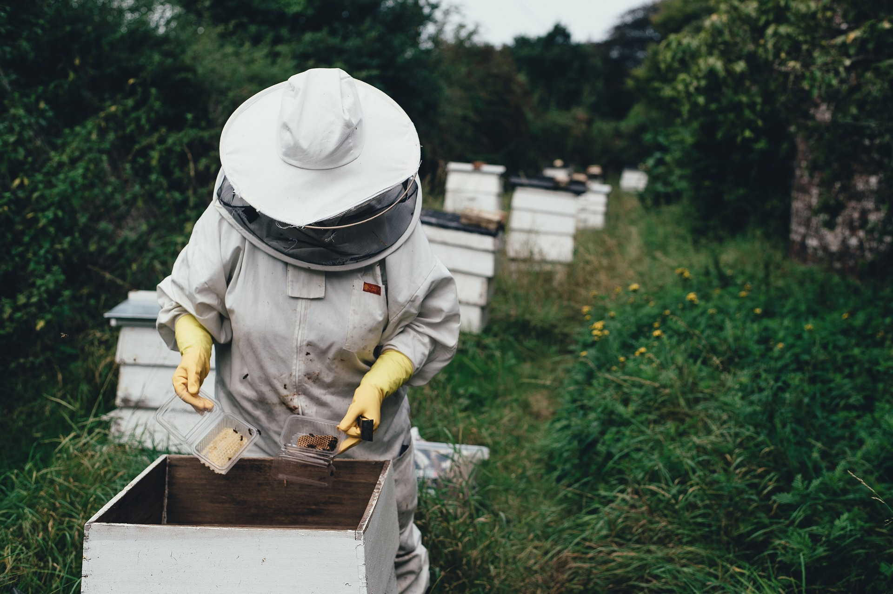

About Us

Bootstrap Apiaries was founded by Leroy in 2014. Leroy is interested in sustainability of ecosystems and the economy. His education background is in plant and insect ecology with related interests in evolution and system dynamics. He has been interested in social insects since childhood and almost started keeping bees at 13 until a neighbor complained about the impending apiary setup. When he was in school, the beekeeping industry was just starting to deal with fallout of the accidental varroa mite introduction from Asia, resulting in staggering losses and requiring chemical treatment for bee colonies. At the time, it seemed that it would take many many years before resistant traits would be identified and established. With time there have been more and more reports of pockets of bees surviving, even thriving without chemical intervention. So Leroy decided to experiment by buying a colony, then splitting it using queens with some resistant traits. Over time he has expanded his apiary by starting new colonies from those that survive without treatment, using natural selection as a base for selection. Now he has enough colonies to provide a dependable supply of honey that funds the project of raising pest and pathogen resistant bees.
“Bootstrap” was chosen as a name as Leroy has built everything from scratch, recycling waste wood and starting new colonies. It is a model that while inherent in natural systems (no such thing as unemployment in these), but is getting increasingly scarce in modern economic systems. Natural systems have profound capabilities of reorganization and adaptation in the face of challenges. Leroy hopes to tap into these capabilities and model how perhaps we can work with nature rather than trying to impose artificial structures on it. Perhaps we can apply some of these principles to unlock human potential, rather than impeding it.
The Science
Much of science in the beekeeping industry is focused on keeping bees alive in the short term using chemical interventions. Without these, most managed bee populations will collapse. There are small pockets of bees in nature that survive and thrive. An example of this is is a population of bees in the Arnot Forest in New York state. These bees have been studied extensively by Dr. Tom Seeley both before and after the introduction of varroa mites to North America. With the arrival of mites, this population of bees crashed, but within a few years built back up to pre introduction levels.
Yet if you take these bees and put them in a managed apiary, they fail. There are clearly other factors at play.
Here are some guiding principles so far. Subject to change as we learn.
- Natural Selection is allowed to occur. A traditional approach to breeding is to try to predict what traits are important, then encorporate these traits in the local population. By using natural selection as the base for selection, we acknowledge we don't necessarily know enough to make guesses about what is important. We can sample during this process and attempt to understand what is going on.
- We assume that pests and pathogens are variable from region to region, The current knowledge of pathogen variablity is very limited. For instance we now understand that there may be 6 geographical variants of European Foul Brood in England. It seems naive that this variability is not present in other pathogens. It seems plausible that adaptation of bees is to local pathogens and that this resistance will break down if exposed to new variants. Our response to this is restrict the movement of bees especially outside our local region, to reduce exposure to new pathogens. We also encourage local production of bees and avoid bringing large numbers of bees from outside the region. The risk is probably proportional to distance. There are large risks associated with moving bees across the continent and from other continents. Moving bees has resulted in the globalized distribution of pests and pathogens that used to be regional. We can ask bees to adapt, but its not fair to ask them to adapt to pathogen chaos.
- There is also risk in disease spreading locally. We hope to identify the most important factors that reduce the spread of disease locally from hive to hive
- Bees should be in healthy environments. That mostly means staying away from industrial agriculture, and promoting elimination of sprays within the region.
- We want to contribute what we learn to the broader community. We have contributed to a national survey in 2016 that attempted to identify key characteristics in bee resistance. My bees are part of a population genetic study at UBC. Because this population of bees is not treated, it is a high information system with much that can be learned. With time we are adding sampling protocols that will add to our knowledge of bees.